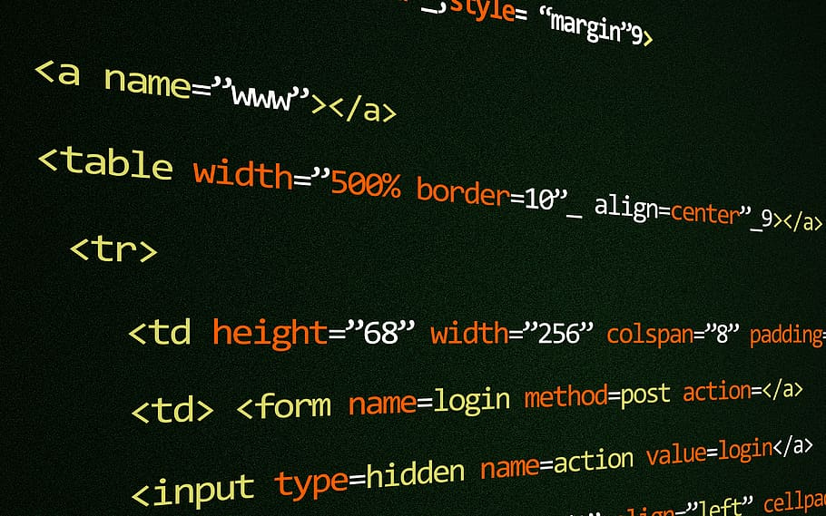

Welcome to my website! This has been created using everything I have learned over the past month. It's purpose is to show that the infomation and techniques that I have been practicing can used in a practical way. So I have added everything from videos to audio files to working with CSS and styling, this website should show a good example of my capabilities.
This module is all about the different aspects of web design, so far we have been focusing on HTML (HyperText Markup Language) and CSS (Cascading Style Sheets). These are forms of coding that make up most websites on the internet. HTML is the bulk of the code that is used to program most of the content such as text, image, video and audio among other things. CSS is code that is used alongside this and as the name suggests; it is used to change the 'style' of the website.
Next term we will be delving into 'Python', which is in my opinion on a completely other level compared to html and css. Code Institute describes it as...
'It's often used as a 'scripting language' for web applications. This means that it can automate specific series of tasks, making it more efficient.'This means we will learn how to create code that may or may not perform automated tasks (if this is correct :) )